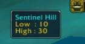

EZoneLevel from Ezarra
An extension to ZoneLevel that includes sub-zones, a tooltip window, nifty icons, and messages to the ChatWindow
Features
ToolTip Window
-

-
Support for SubSZones
-
Text in chat and ToolTip is colored to match threat level
-
Notification for unknown Zones
-
Intelligent 'popping' to show Zone info if current subzone is unknown
ChatSpam
-
Show zone info in chat window for all unknown zones
-
Show zone info in chat window for all known zones
-
Dont' Show zone in chat window
Credits and Thanks
-
Credit to ZoneLevel and InTheZone for inspiration.
-
newtonma for the excellent icons
-
Everyone who's ever written a mod, regardess of how lame (or cool)
-
EtherealMoon for not playing much

-
Covisp.net for hosting my email
Change Log
1.0.7
-
Added EZoneLevel.html readme file
-
Interface version 1300 (22-03-05 update)
1.0.6
-
Added status and toggle commands
1.0.5
-
Fixed nil concatenation bug
1.0.4
-
Towns and cities that do not have their own maps now show the zone for the zone they are in
-
Messages in the Chat spam should not repeat, even if moving from one onknown suzone to the zone and then to another unknown subzone, only the first message will be displayed.
-
Color definitions are centralized for easier customization
1.0.3
-
Update for current WOW (4216)
-
New icons by newtonma
-
no longer spams unknown areas when set to off
-
*CHANGE* only spams unknown when set to unknown, only known areas are spammed when set to "on"
-
1.0.3 Variables renamed to avoid conflicts with ZoneLevel (but really, use one or the other)
-
1.03 Some minor code changes to make the LUA slightly smaller
1.0.2
-
A couple of bug fixes
-
No longer thinks the main zone is unknown
-
Added commands to disable the Chat window spam (toggle on, off, unknown)
1.0.1
-
Minor bug fix (no longer shows empty ``Levels for "" unknown`` message)
-
Added some Instances to the list of areas
Contact
-
Character: Ezarra on EarthenRing
-
Email: Ezarra